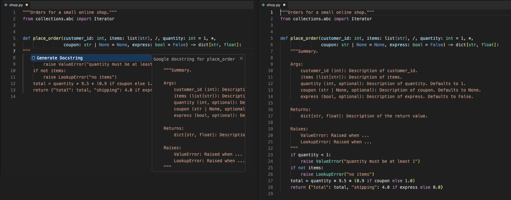

Open files in VS Code and Cursor / Code and APIs
Generate Python docstrings in VS Code
Docstring Generator writes the docstring skeleton when you type """ on the line under a def or class and press Enter. It reads the real signature with a bundled parser, so parameters, type hints, defaults, the return type, yields and raises are filled in, with no Python install. After you change the signature, Update Docstring fixes the docstring and keeps the text you wrote. Zovo Pro (USD 19 once) does both jobs for every Python file of a workspace at once, with 3 free tries each.
Free, MIT license. Extension ID zovo.zovo-docstring-generator, version 0.2.0. Needs VS Code 1.90.0 or newer.

Steps in VS Code
- Install Docstring Generator from the Marketplace, or press Ctrl+P (Cmd+P on macOS) and run
ext install zovo.zovo-docstring-generator. - Pick a style with "Docstring: Choose Docstring Style". Google is the default. NumPy, Sphinx, Epytext and your own Mustache template are the others.
- Type
"""on the line under adeforclassand press Enter, or pick Generate Docstring from the suggestion. Ctrl+Shift+2 (Cmd+Shift+2 on Mac) does the same for the function at the cursor. - Replace the placeholders with your own words. Parameters show their type and default, and Raises lists each
raisein the body. - When the signature changes, run "Docstring: Update Docstring (Signature Changed)" or use the light bulb on the def line. A renamed parameter keeps its text, a new one gets a placeholder, and a removed one with your text is marked
[removed from the signature]. - For a whole file, run "Update All Docstrings in File" or "Add Missing Docstrings in File". Set
zovoDoc.updateOnSaveto update on every save.
Where Zovo Pro saves time
Generating and updating docstrings for one function or one file, all styles, custom templates, JSDoc for JavaScript and TypeScript, update on save and the Docstring Coverage Report are free, with no network calls and no sign-in.
On an old codebase with hundreds of undocumented functions, Add Missing Docstrings in Workspace gives every public function and class without a docstring one, in every Python file of the workspace or of one folder. First you see how many docstrings in how many files will change, and you can check each one in the Refactor Preview. One Undo takes it all back, and the files are changed but not saved. The other Pro tool is Update Stale Docstrings in Workspace, which updates every docstring that no longer matches its signature.
With Add Missing Docstrings in Workspace (Zovo Pro)
- Run "Docstring: Add Missing Docstrings in Workspace (Pro)..." from the Command Palette, or right-click a folder in the Explorer.
- Read the count, then pick Preview to check each change, or Apply.
- Review the unsaved files with Git, then save. Cancel or "nothing to change" uses no free try.
Add Missing Docstrings in Workspace works 3 times on your computer before it asks for a license, and a try counts only when you get a result. Opening a file shows no popup and no countdown.
Zovo Pro costs USD 19 once. It is not a subscription, and it turns on the Pro tools in every Zovo extension, not only Docstring Generator. After a card payment (Stripe) your license key shows on the next page. In VS Code, run "Zovo Pro: Enter Zovo Pro license key" from the Command Palette and paste it. The key is checked on your computer, with no network call. With GitHub Sponsors, pick the "$19 one time" tier, then run "Zovo Pro: I already paid: unlock with GitHub Sponsors" and sign in with the same GitHub account. With PayPal, send USD 19 with "Zovo Pro" in the note and the key comes by email within a day.
A team of 5: USD 59 once, by card or by PayPal. Every rule and every Pro tool is on the Zovo Pro page.
Steps in Cursor, Windsurf or VSCodium
- Open the Extensions view with Ctrl+Shift+X (Cmd+Shift+X on macOS).
- Search for
zovo.zovo-docstring-generatorand click Install. Cursor, Windsurf and VSCodium install from Open VSX, where it is published aszovo/zovo-docstring-generator. - If your editor has no gallery, download the .vsix from the Open VSX page and run "Extensions: Install from VSIX...".
- Then use it the same way as in VS Code.
What Docstring Generator handles
- Type hints such as
str | Noneanddict[str, list[int]], defaults,*args,**kwargs, and the/and*markers. - Classes, with
__init__arguments, and dataclass, attrs, pydantic and NamedTuple fields under Attributes. - Python cells in Jupyter notebooks, and module docstrings at the top of a file.
- JSDoc for JavaScript and TypeScript, with types and the same update.
What it does not do
- Summaries and descriptions are placeholders. It writes the structure from the code, not what the code means.
- The coverage report and the workspace tools skip Python files over 2 MB (setting
zovoDoc.report.maxFileMB). - Add Missing Docstrings and the report skip names that start with an underscore, except
__init__(settingzovoDoc.bulk.skipPrivate). - It needs VS Code 1.90 or newer.
Other options
- autoDocstring. The most installed Python docstring extension. It has had no release since February 2022, and its open issues ask for a way to update a docstring.
- An AI assistant in your editor. Writes the descriptions as well as the structure. Check its output, since it can miss a parameter or a raise.
Install counts and Open VSX status were checked on 12 November 2026. Descriptions in quotes are the extensions' own.
Questions
Do I need Python installed?
No. The parser (tree-sitter) comes with the extension.
Will Update overwrite what I wrote?
No. The summary, examples and notes are not touched, a renamed parameter keeps its text, and each docstring keeps its own style.
Does it work for JavaScript and TypeScript?
Yes. Type /** above a function and pick JSDoc with types, or run Generate JSDoc.
Does it work in Cursor or Windsurf?
Yes. Cursor, Windsurf and VSCodium install extensions from Open VSX. Search for the extension in their Extensions view and install it there.
More about Docstring Generator
Read the Docstring Generator page for every feature and setting, or the source code on GitHub.
Related guides
- Open a SARIF file in VS Code
- Preview a Swagger or OpenAPI file in VS Code
- Preview an HTML file with its CSS and images in VS Code
- Test a regex in VS Code
Zovo Pro and support
Zovo Pro: USD 19 once, every Zovo viewer. It turns on the Pro tools in this extension and in the other Zovo extensions you use. The free features stay free.
After a card payment your license key shows on the next page. Paste it with the command "Zovo Pro: Enter a key".
You can also support the work with no Pro:
Need your format supported?
Open a format request with a sample file, and I reply there whether it can be done. For USD 299 once, through this GitHub Sponsors tier, I add your file format or a missing feature to this extension, with tests, within 7 days.